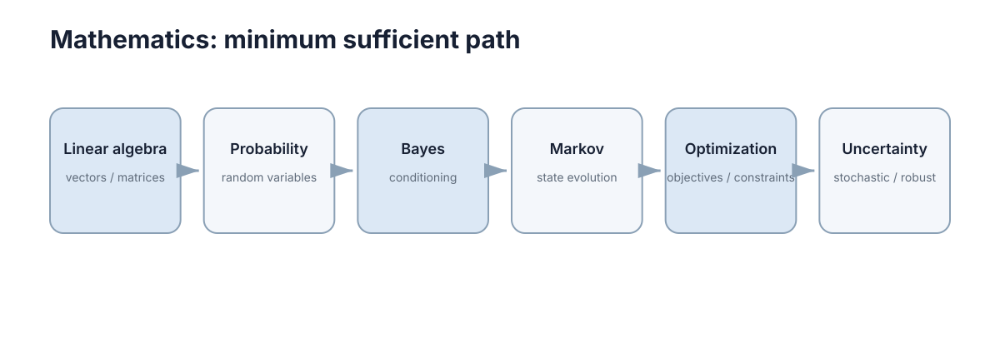

Mathematics
这里只保留后续强化学习、控制、机器人和优化反复使用的数学工具。目标不是完成一门数学专业课程，而是能够读懂公式、理解推导并进行基本计算。
核心判断标准只有一条：当你在后面的章节里看到一个公式时，能不能说出「这个符号是什么、它为什么要出现在这里、它的取值范围和单位是什么」。 三条都能答上，这一节可以快速过；答不上，就回对应章节补齐。下面给出依赖顺序、概念地图、向后接口、阅读路径和常见误区，读完这一页你应该能自己决定读哪几章、跳过哪几章。

本节要解决的问题
后面每一章都会遇到「看起来懂、实际不会用」的知识断层。断层通常不出在公式本身，而出在下面四类问题上。
| 断层类型 | 典型症状 | 具体例子 | 后果 |
|---|---|---|---|
| 符号语义不明 | 认得出符号，说不出口径 | \(p(s'\mid s,a)\) 是概率还是密度？ | 把「概率为零」和「不可能」混为一谈 |
| 可微 ≠ 可解 | 令梯度为零就当成最优点 | \(\nabla_\theta J(\theta)=0\) 只是必要条件 | 停在鞍点上，或误判极值类型 |
| 有限精度被忽略 | 数学等价的变形数值上不等价 | \(\exp(1000)\) 直接溢出为 \(\infty\) | 算法发散，且原因不明显 |
| 多重目标冲突 | 期望最优、最坏最优混用 | 期望最优对尾部风险不敏感 | 高风险场景下性能崩溃 |
逐一展开：
- 符号先于语义。 离散分布用概率质量函数，求和恒为 1；连续分布用概率密度，积分才为 1，而密度本身可以大于 1。把两者混用会导致把「概率为零」和「不可能」混为一谈 —— 连续分布下每个点的概率都是零，但事件确实会发生。
- 可微与可解是两回事。 \(\nabla_\theta J(\theta)=0\) 是必要条件而非充分条件；只有凸性才能把它升级为充要条件。非凸问题上，梯度为零的点可能是极小、极大或鞍点。
- 有限精度是真实约束。 数学上的等价变形在浮点下可能数值不稳定。例如 \(\text{softmax}\) 对 \(10^3\) 量级输入直接取指数会溢出，工程实现要减去最大值；再如大数相减会造成有效位抵消。
- 不确定性与约束同时存在时，优化问题不再有单一答案。 期望最优、最坏情况最优、鲁棒最优是三个不同目标，对应不同的解。
本节六章分别对应上述断层的具体位置。建议的用法是：带着一个你手上真实存在的公式来读，逐条对照，而不是按目录顺序读完。
六章的依赖顺序
六章不是并列的，而是有明确的前置关系。跳过前置章节会在后面卡住。
| 章节 | 前置章节 | 若跳过前置会卡在哪里 |
|---|---|---|
| 线性代数与微积分基础 | 无（起点） | 一切。\(\nabla_\theta J\)、雅可比、特征值都无从谈起 |
| 数值计算基础 | 线性代数 | 知道 LQR 要解 Riccati 方程，但不知道求解器为何不收敛 |
| 概率与随机变量 | 微积分 | 期望 \(\mathbb E[X]=\int x\,p(x)\,dx\) 的积分号看不懂 |
| 条件概率与贝叶斯推断 | 概率与随机变量 | 无法理解 posterior、belief state、POMDP 的信念更新 |
| 马尔可夫过程 | 条件概率与贝叶斯 | 无法理解 Bellman 方程为什么可以去掉历史 |
| 优化、约束与不确定性 | 线性代数 + 概率 | 无法理解对偶、KKT、风险约束、分布鲁棒 |
依赖链条可以压缩成一句话：
注意数值计算被放在第二位，是因为它服务于后面全部章节：任何理论结论最终都要落到一个能在有限精度下跑出来的算法。把它放到最后学的代价是，你会在前三章一直写不出可信的实现。
三条最容易被低估的边：
- 线性代数 → 数值计算。 特征值分解本身是解析概念，但 \(\lambda_{\max}/\lambda_{\min}\) 的比值（条件数 \(\kappa(A)\)）决定误差被放大多少倍。
- 贝叶斯 → 马尔可夫。 马尔可夫性的严格表述依赖条件独立，而条件独立是用条件概率定义的。
- 概率 → 优化。 只在期望意义上的最优需要把随机目标写成 \(\mathbb E[f(x,\xi)]\)，这就把概率对象塞进了优化问题。
概念地图
图上的节点可以按「输入 — 变换 — 输出」三类理解。每个节点在主标签下还带一个子标签，说明它负责的具体对象。
| 图上节点 | 子标签 | 它在说什么 | 关键量化关系 | 直接服务于 |
|---|---|---|---|---|
| Linear algebra | vectors / matrices | 用矩阵表达线性变换与坐标系选择 | \(A\mathbf x=\lambda\mathbf x\) 定义特征方向；\(A=P\Lambda P^{-1}\) 对角化 | 状态空间模型、LQR、协方差传播 |
| Probability | random variables | 用分布描述未知量 | \(\mathbb E[X]=\sum_x x\,p(x)\) 或 \(\int x\,p(x)\,dx\)；\(\operatorname{Var}(X)=\mathbb E[X^2]-\mathbb E[X]^2\) | 奖励期望、噪声建模 |
| Bayes | conditioning | 观测之后如何更新对未知量的看法 | \(p(\theta\mid x)=\frac{p(x\mid\theta)p(\theta)}{p(x)}\) | 信念更新、状态估计、POMDP |
| Markov | state evolution | 无记忆的随机演化 | \(p(s_{t+1}\mid s_t,\dots)=p(s_{t+1}\mid s_t)\)；稳态 \(\pi P=\pi\) | Bellman 方程、MDP 建模 |
| Optimization | objectives / constraints | 在约束下选决策 | \(\min_x f(x)\ \text{s.t.}\ g(x)\le 0\)；KKT 条件 | 策略优化、MPC |
| Uncertainty | stochastic / robust | 在未知存在时该优化什么 | \(\min_x \mathbb E[f(x,\xi)]\) 与 \(\min_x \max_{\xi\in\mathcal U} f(x,\xi)\) | 鲁棒控制、安全约束 |
图的走向可以读成两条主干：
- 确定性主干：Linear algebra → Optimization。适合控制类问题，特征是 \(\dot x=Ax+Bu\) 这类可解析对象。
- 随机性主干：Probability → Bayes → Markov → Uncertainty。适合学习与估计类问题，特征是目标里含期望。
两条主干在 Optimization 的交汇点就是「随机优化」：
前者用于已知分布、可以平均的场景；后者用于分布未知或不可信、必须防最坏的场景。选错这一条，后面所有结论都针对另一个问题。 读图的方法是：先确定你手上的问题属于哪一类输入（确定 / 随机 / 带约束），再顺着箭头找它需要哪几个节点。
后续章节的接口
本节不追求自成一体的完整性，它存在的意义是给后面五节提供接口。下表列出最常用的几条。
| 本节概念 | 被哪一章使用 | 用来解决什么 |
|---|---|---|
| 特征值与稳定性 | ../control-theory/01-modeling-state-space.md | 由 \(\dot x=Ax\) 判断稳定性：全部 \(\operatorname{Re}\lambda_i(A)<0\) |
| 矩阵求逆与条件数 | ../control-theory/04-lqr.md | 判断 LQR 的 Riccati 迭代是否数值可信 |
| 期望与方差 | ../reinforcement-learning/01-mdp-bellman.md | 定义回报 \(G_t=\sum_{k=0}^{\infty}\gamma^k r_{t+k}\) 的期望与方差 |
| 条件概率与贝叶斯 | ../game-theory/04-sequential-bayesian.md | 由观测更新对对手类型的信念 |
| 条件概率与贝叶斯 | ../multi-agent-systems/02-coordination.md | 通信受限时用共享观测维持一致的局势估计 |
| 马尔可夫性与稳态分布 | ../multi-agent-systems/05-multi-agent-learning.md | 分析多智能体联合策略的收敛行为 |
| 约束优化与 KKT | ../control-theory/05-mpc.md | 有限时域滚动优化的可行性与最优性条件 |
| 不确定性建模与风险度量 | ../robustness-safety/02-robustness-risk.md | 在分布偏移下给出可验证的性能下界 |
| 概率与集中不等式基础 | ../robustness-safety/02-robustness-risk.md | 用有限样本估计泛化误差与风险上界 |
一条经验规则：如果某章的公式你认不出符号来源，先回本节查接口表，再回对应章节。 反向也成立 —— 本节任何一章如果你说不出它被谁用，说明你还没找到它的用途，可以先跳。
阅读顺序建议
不同目标的读者不需要读完全部六章。三种路径如下。
路径 A：只要够用（约 2 小时）。 只读 线性代数与微积分基础 的梯度与矩阵部分，以及 概率与随机变量 的期望、方差、常见分布。目标是看懂符号，不追求推导。适合只理解概念、不做实现的读者。判断可以停下的信号：你能正确读出 \(\operatorname{Var}(X)=\mathbb E[X^2]-\mathbb E[X]^2\) 中每一项的含义。
路径 B：做控制（建议全读，顺序固定）。 线性代数 → 数值计算 → 概率 → 优化。控制侧最重要的是特征值、条件数、二次型与约束优化。贝叶斯和马尔可夫可以先跳，回头补。读到 ../control-theory/04-lqr.md 和 ../control-theory/05-mpc.md 时再回来查公式。最关键的两条量化结论是：稳定性由 \(\max_i\operatorname{Re}\lambda_i(A)\) 的符号决定；数值可信度由 \(\kappa(A)\) 的量级决定。
路径 C：做学习与优化（建议全读，且必须读状态估计相关部分）。 概率 → 贝叶斯 → 马尔可夫 → 优化，最后回补数值计算。学习侧的核心是期望回报、优势函数、策略梯度，全部建立在条件期望之上。马尔可夫性是 Bellman 方程成立的前提，跳过它会导致后面把「用历史做决策」和「用状态做决策」混淆。策略梯度的典型形式
里同时出现了期望、条件概率、梯度三样东西，正是路径 C 三个模块的组合。
| 读者类型 | 必读章节 | 可跳过 | 典型受卡点 |
|---|---|---|---|
| 只要够用 | 1、3 | 2、4、5 | 分不清分布与密度 |
| 做控制 | 1、2、3、6 | 4、5 | Riccati 迭代不收敛不知原因 |
| 做学习与优化 | 3、4、5、6 | 1（若已熟） | Bellman 方程的期望写法 |
常见误解
下面六条是本节最常出现的错误认识。每条都给出可验证的修正方式。
| 错误说法 | 为什么错 | 正确说法 |
|---|---|---|
| 「概率密度可以大于 1，所以一定写错了」 | 密度不是概率，只有积分才是概率 | \(p(x)\) 可以任意大，只要 \(\int p=1\)；概率 \(P(X\in A)=\int_A p\) 才必须 \(\le 1\) |
| 「梯度为零就是最小值」 | 梯度为零只说明一阶导数为零，是必要条件 | 需配合二阶条件 \(\nabla^2 f\succ 0\) 才能判定极小；鞍点同样梯度为零 |
| 「数值上等于零就是零」 | 浮点运算存在舍入与抵消误差 | 应比较与容差的关系，如 $ |
| 「期望最优即最坏情况也不错」 | 期望对小概率高损失事件不敏感 | 期望最优可能在高风险场景崩溃，需要 CVaR 或最坏情况目标 |
| 「马尔可夫性意味着过程没有结构」 | 无记忆只针对「给定当前状态后的未来」 | 未来仍可依赖当前状态，只是不依赖更早历史 |
| 「贝叶斯更新需要大量数据才有意义」 | 先验本身参与推断，小样本下先验影响更大 | 小样本时结果由先验主导，这既是风险也是可利用的信息 |
补充三点容易被忽略的推论：
- 第 2 条的实践后果：非凸优化里不能只用梯度范数作为停止条件，应同时观察目标值是否还在下降。
- 第 3 条的实践后果：矩阵求逆若 \(\kappa(A)\) 达到 \(10^{10}\)，双精度下有效位只剩约 6 位，此时应改用分解法而非显式求逆。
- 第 4 条的实践后果：安全关键场景应显式写出风险度量，而不是在期望目标上加惩罚项凑效果。
本章导航
| 章节 | 主题 | 解决什么问题 |
|---|---|---|
| 线性代数与微积分基础 | 矩阵、特征值、梯度、雅可比 | 提供描述线性变换与变化率的基本语言 |
| 数值计算基础 | 浮点误差、条件数、迭代收敛 | 保证理论公式在有限精度下可执行、可信 |
| 概率与随机变量 | 分布、期望、方差、常见分布 | 为随机奖励、噪声与不确定性提供度量 |
| 条件概率与贝叶斯推断 | 条件分布、Bayes 公式、信念更新 | 回答「观测之后该怎么改变判断」 |
| 马尔可夫过程 | 状态转移、无记忆性、稳态 | 为动态规划与 Bellman 方程提供前提 |
| 优化、约束与不确定性 | 凸性、KKT、对偶、风险与鲁棒 | 在约束与不确定下选出可执行的决策 |
六章合起来覆盖的对象是：向量与矩阵、随机变量、条件分布、状态演化、约束目标、不确定性六类数学对象，正好对应图上六个节点。读完这一节，你不需要成为数学专业者，但应该能在任意一篇后续材料里，快速定位某个公式属于哪一类对象、依赖哪条前置结论。
每章的自检标准可以直接量化：第 1 章看能否手算 \(2\times2\) 矩阵的特征值；第 2 章看能否解释为什么 \(1/3\) 在双精度下存储不精确；第 3 章看能否区分概率质量函数与密度；第 4 章看能否手推一次 Bayes 更新；第 5 章看能否写出转移矩阵的稳态方程；第 6 章看能否写出一个含不等式约束的 KKT 条件组。全部都答得上，这一节可以视为完成。
下一步：先读 线性代数与微积分基础 建立语言，再用 概率与随机变量 掌握随机性度量；若目标是控制，随后跳到 ../control-theory/01-modeling-state-space.md；若目标是学习与优化，则从 ../reinforcement-learning/01-mdp-bellman.md 开始。